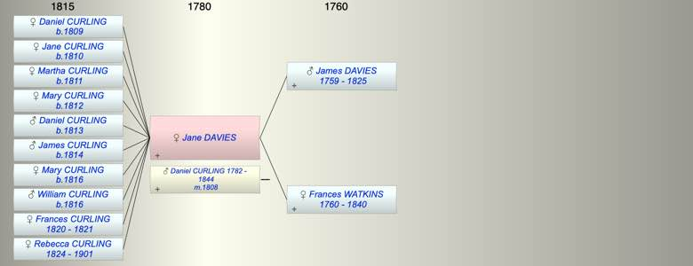

| [Index] |
| Jane Sarah DAVIES |
|  |
| m. 23 Feb 1808 Daniel CURLING (1782 - 1844) at St Mary Newington |
| Parents: |
| James DAVIES (1759 - 1825) |
| Frances WATKINS (1760 - 1840) |
| Events in Jane Sarah DAVIES's life | |||||
| Date | Age | Event | Place | Notes | Src |
| 23 Feb 1808 | Married Daniel CURLING (aged 25) | St Mary Newington | |||
| 22 Feb 1809 | Birth of daughter Daniel CURLING | City of London | Note 1 | ||
| 25 Mar 1810 | Birth of daughter Jane CURLING | City of London | Note 2 | ||
| 17 Jul 1811 | Birth of daughter Martha CURLING | City of London | Note 3 | ||
| 06 Jul 1812 | Birth of daughter Mary CURLING | City of London | Note 4 | ||
| 05 Feb 1813 | Birth of son Daniel CURLING | Cheapside | Note 5 | ||
| 11 Jul 1814 | Birth of son James CURLING | City of London | Note 6 | ||
| 1816 | Birth of daughter Mary Ann CURLING | Deptford | Note 7 | ||
| 14 Sep 1816 | Birth of son William CURLING | City of London | Note 8 | ||
| 19 Mar 1820 | Birth of daughter Frances CURLING | City of London | Note 9 | ||
| 1821 | Death of daughter Frances CURLING (aged 1) | Note 10 | |||
| 03 Feb 1824 | Birth of daughter Rebecca CURLING | City of London | Note 11 | ||
| 1825 | Death of father James DAVIES (aged 66) | ||||
| 1840 | Death of mother Frances WATKINS (aged 80) | ||||
| 1844 | Death of husband Daniel CURLING (aged 62) | London | Note 12 | ||
| Oct 1901 | Death of daughter Rebecca CURLING (aged 77) | Upper Clapton | Note 13 | ||
| Created on a Mac™ using iFamily for Mac™ on 8 Oct 2023 |